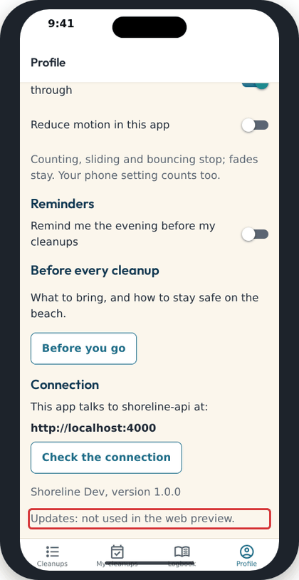

📡 Lesson 9.3: Updates and Monitoring
An app on a volunteer's phone is not finished; it is just out of your hands. Today you get some of it back. Shoreline Crew learns to receive new JavaScript without a trip through a store, you learn which changes may travel that way and which never can, the app gets a calm crash screen and one place to report errors from, and every push to GitHub runs your checks for you.
🎯 Learning Objectives
By the end of this lesson, you will be able to:
- Explain how
expo-updatesand EAS Update deliver new JavaScript and assets to an installed build, and when a phone starts using them - Choose a runtime version policy, and measure on your computer whether a change needs a new build or can go out as an update
- Connect build profiles to update channels, and publish an update to the right builds with the right environment variables
- Say what an over-the-air update may and may not change, under Expo's technical limits and the app stores' rules
- Tell the user-facing version from build numbers, and add a crash screen and a reporting seam that a crash-reporting service can plug into
- Write a GitHub Actions workflow that runs the type check, lint and tests on every push, including the step a fresh checkout of an Expo project needs
📦 Code for this lesson
Starting code: lesson-34-start.zip · Finished code: lesson-34-end.zip. Each folder has a README with the commands to run it. Today's code includes shoreline-crew/.github/workflows/ci.yml: names that start with a dot may be hidden in your file manager; VS Code shows them.
In This Lesson
👋 Welcome: After the App Is Installed
At the end of Lesson 9.2 you stopped the API and watched Shoreline Preview fail to reach the address baked into it. On the web, the HQ would have been fixed by a deploy: the next visitor gets the new files. A phone app does not work that way. The code is inside the installed app, and until the phone installs something new, it keeps running what it has.
By the end of this lesson:
- Shoreline Crew can take updates. A new preview build carries
expo-updates, so the JavaScript and pictures inside it can be replaced over the air, from a command on your computer. - You know which changes may travel that way. A runtime version you can measure tells you, before you publish, whether an update fits the builds on people's phones.
- Problems become visible. A screen that crashes shows a calm message instead of closing the app, and every unexpected error goes through one function that a crash-reporting service can listen to.
- GitHub checks every push: the type check, lint and all 57 tests, on a fresh computer each time.
Why it matters for your work: shipping is the start of an app's life, not the end. Teams are judged by how fast they can fix a bug that volunteers are hitting today, and by whether they hear about it before a one-star review does. "Can we push a fix without a store review?", "Which version is she on?" and "Did the tests pass?" are questions you will hear every week on a mobile team.
🌱 Releases are a habit, not an event
Nobody gets releases right by thinking harder before the first one. They get them right by making small releases often, with checks that catch mistakes early and a way back when something slips through. Today you build all three: CI that catches, updates that deliver, and reports that tell you. If your first update does not show up on the phone, that is the most common first experience there is, and Common Mistakes has the reasons.
📡 How an Update Reaches a Phone
Lesson 9.2 split every app into two parts: the native part, compiled into the build (React Native itself, Expo's modules, your config plugins, the name, ids and permission sentences), and the JavaScript part, your screens and logic, which a release build carries inside as Hermes bytecode, together with assets such as fonts and images. expo-updates is a native module that lets a build replace the second part.
- On your computer,
npx eas-cli@latest updaterunsnpx expo exportfor Android and iOS (read in EAS CLI's source for this lesson): the same Hermes bundle and assets a build would embed, plus ametadata.jsonthat lists them. You can run that export yourself and look (Step 2). - It uploads them to EAS Update as an update for a runtime version (the next section) on a channel such as
preview. - On the phone, a build with
expo-updatesand an update address asks Expo's update service, every time it starts (the default,ON_LOAD), whether there is something newer for its channel and runtime version. - It does not wait for the answer. The app opens at once with the code it already has (the native setting is a launch wait of 0 milliseconds, which you will see in Step 1), and a new update downloads in the background.
- The next start runs the update. Expo's docs say the update applies "after it is downloaded and the app is restarted". On a phone that means closing the app completely and opening it again, sometimes twice: once to download, once to run.
The code a build was made with stays inside it as the embedded update. If a downloaded update fails to start, expo-updates falls back to it, and you can send every phone back to it on purpose ("Channels, Profiles and Publishing"). That safety net is why updates are safer than they sound.
💡 Mental model: the plan by radio, the kit by van
Crews already on the beach cannot get new tools until the supply van comes back: that is a new build through a store. But the day's plan, the map of where to sweep, the list of what to log, can be radioed to them at any time: that is an update. The radio only works with crews whose radio set matches the channel and the model of kit (the runtime version), and a crew hears the new plan when they next check in, not in the middle of a sentence.
| Where the code runs | Where its JavaScript comes from | Updates? |
|---|---|---|
| Expo Go, development build | Metro on your computer | Not by themselves: they always load from Metro (Expo's docs: in debug builds "the default behavior is to always load the latest JavaScript from a development server") |
Preview or production build without expo-updates (Lesson 9.2's Shoreline Preview) | Inside the app | Never: nothing in it can download code |
Preview or production build with expo-updates and an update address | Inside the app, or the newest matching update | Yes, on its channel |
| The web preview | The web export | Not used (on the web, you deploy new files instead) |
The second row is the uncomfortable one: the Shoreline Preview you installed in Lesson 9.2 cannot be updated. expo-updates is native code, so adding it means one more build. After that build, most fixes can travel by radio.
🧬 Runtime Versions: Which Builds Can Take an Update
An update is JavaScript written for a particular native part. If the JavaScript calls a native module the build does not have (say, a camera library added after the build was made), it crashes. So every build and every update carries a runtime version, a label for its native part, and a phone only accepts updates with exactly its own runtime version. You choose how that label is made in app.config.ts:
runtimeVersion | The label is | The risk |
|---|---|---|
{ policy: 'appVersion' } | The version field, such as 1.0.0 | You change native code and forget to change version: the update reaches builds it does not fit, and they crash. It is what eas update:configure writes by default (read in EAS CLI's source) |
{ policy: 'fingerprint' } | A hash of everything native, computed by Expo's fingerprint tool | Fewer surprises; more builds, because any native change (even a permission sentence) asks for one |
{ policy: 'nativeVersion' } | version plus the build number | Expo's docs say it does not work with build numbers kept on EAS (appVersionSource: "remote", which Shoreline Crew uses) |
A string, such as '1' | Whatever you write | All up to you |
Shoreline Crew uses fingerprint, because it turns the question "does this change need a build?" from a memory test into a measurement. You can compute the label on your own computer with npx expo-updates runtimeversion:resolve. Measured on this course's project while writing the lesson:
| Change | Runtime version (Android) | So |
|---|---|---|
| None (development variant) | 29268b22… | The starting point |
| A comment added to the Logbook screen | 29268b22… (same) | JavaScript: an update |
version changed from 1.0.0 to 1.1.0 | 29268b22… (same) | The user-facing version is not native: an update still fits |
| The location permission sentence reworded | ec08d9b0… (different) | Written into the native project: a build |
APP_VARIANT=preview | 142af542… (different) | Each variant is its own app with its own label |
APP_VARIANT=preview with another EXPO_PUBLIC_API_URL | 142af542… (same as preview) | The API address is JavaScript: an update can change it |
The last two rows matter for Shoreline Preview. Its runtime version depends on the variant, so an update for it has to be made with APP_VARIANT=preview, and its API address can change by update, because EXPO_PUBLIC_ values are written into the JavaScript (Lesson 5.1). The hashes in your project will be different from these: the fingerprint includes your project id once you paste it, and the exact versions of every package.
💡 Mental model: the shape of the socket
A build is a socket; an update is a plug. The runtime version describes the socket's shape. With the fingerprint policy, Expo measures the socket for you every time, so a plug made for yesterday's socket simply does not go in. Nothing breaks: the phone keeps running what it has.
📺 Channels, Profiles and Publishing
A channel is a name a build is given when it is made, from its build profile in eas.json. Shoreline Crew's preview profile gets "channel": "preview" and production gets "channel": "production", so an update for testers can never reach the volunteers' store app by accident. Development builds need no channel: they load from Metro. (eas update:configure adds a channel named after every profile, including development; that does no harm, Shoreline Crew just leaves it out.)
Publishing an update for the preview builds is one command:
npx eas-cli@latest update --channel preview --environment preview --message "Pull to refresh shows the time"--channel previewsends it to builds made with the preview profile. Behind the scenes EAS keeps updates on a branch (by default named like the channel) and points the channel at it, so a team can later pointpreviewat another branch without a new build. Expo's docs on branches and channels have the details; one channel per profile is all Shoreline Crew needs.--environment previewis required for projects on SDK 55 and newer (EAS CLI's help says so). It loads that environment's EAS environment variables (Lesson 9.2) and, with them, makes Expo skip.envfiles (read in EAS CLI's source).--messagedescribes the update in lists on expo.dev and innpx eas-cli@latest update:list.
One detail from EAS CLI's source shapes Shoreline Crew's setup: eas update does not read the env of a build profile. The preview profile's APP_VARIANT and EXPO_PUBLIC_API_URL exist only while a build is made. For an update, the same two values must come from the preview environment on EAS, so Step 6 stores them there once. Then the build and every later update agree: same variant, so the same runtime version, and the same API address unless you change it on purpose.
When an update goes wrong
You will publish a bad update one day. EAS CLI 27.10 lists these ways back (from its --help):
| Command | What it does |
|---|---|
npx eas-cli@latest update:rollback | Republishes the update before the bad one, or the embedded code if there was none |
npx eas-cli@latest update:republish | Publishes an earlier update again, as the newest one |
npx eas-cli@latest update:roll-back-to-embedded | Tells phones to go back to the code inside their build |
--rollout-percentage 10 on update | Sends an update to some of the phones first; the others keep the previous one until you finish the rollout |
Rolling back is itself an update, so it reaches phones the same way: when they next start.
⚖️ What an Update May Change
Two different sets of rules decide what you send by update: what is technically possible, and what the app stores allow.
| Change | Technically | Store rules |
|---|---|---|
| A bug fix, a reworded message, a style, a new picture or font | Update | Fine: this is what updates are for |
| A new screen built from what the app already has | Update | Fine while the app stays the same kind of app; a large new feature belongs in a store release |
| A new package with native code, a permission sentence, the icon, the name, the ids, a new Expo SDK | Build | A store release with review |
| Turning the app into a different app, or adding something the store would have refused | Possible | Not allowed |
Expo's own FAQ says your updates "need to follow the App Store and Play Store guidelines", and the stores do allow this kind of update within limits. In short, as the agreements read when this lesson was written: Apple's developer agreement allows downloaded interpreted code (your JavaScript) as long as it does not change the primary purpose of the app or bypass the review and security of the platform, and Google Play's policies forbid an app from downloading executable native code from outside Google Play, with an exception for code that runs in an interpreter or virtual machine, such as JavaScript. The wording and the section numbers change, so read the current Apple Developer Program License Agreement, App Store Review Guidelines and Google Play policy pages before you rely on this, and when a change would surprise the reviewer who approved your app, send it through review instead.
The free plan covers this course: Expo's pricing page listed, for the Free plan, updates for up to 1,000 monthly active users (people whose app checked for updates that month), 100 GiB of bandwidth and 20 GiB of storage. Like the build limits in Lesson 9.2, check the page before you plan around those numbers.
🔢 Versions and Build Numbers
Lesson 9.1 promised to explain the numbers. Every Android and iPhone app has two:
| The version | The build number | |
|---|---|---|
| Who sees it | Everyone: the store page, the phone's app settings, Shoreline Crew's Profile | The stores and developers |
| Looks like | 1.0.0, then 1.1.0… | 1, 2, 3… (Android versionCode, iOS buildNumber) |
| Rule | You decide, by meaning: new features, fixes | Must grow with every build you upload to a store |
| Shoreline Crew keeps it | version in app.config.ts | On EAS: cli.appVersionSource: "remote" in eas.json |
With appVersionSource: "remote" (Lesson 9.2), EAS stores the build numbers for you: Expo's docs say any build numbers in the app config are ignored, the count starts at 1 on the first build when there is none, and autoIncrement: true on the production profile adds one for every production build. Two people on a team can no longer upload the same number. npx eas-cli@latest build:version:get shows the current numbers, build:version:set sets them (for an app that is already in a store), and build:version:sync copies them into the native folders if you have them.
The version stays yours: you change it in app.config.ts when you release something people should notice. An update does not change either number: Profile keeps saying "version 1.0.0", which is why it gets a second line today that says which update is running.
🚨 Crash Reporting
In Expo Go and development builds, an error in a screen gives you a red screen with the stack and the file. A release build has no red screen. A JavaScript error while drawing a screen leaves the user with nothing on screen or a closed app, and you with no idea it happened. Monitoring has two halves:
- What the volunteer sees. Expo Router lets a layout export an
ErrorBoundarycomponent: when a screen inside it throws while drawing, Expo Router shows that component instead, with the error and aretryfunction. Shoreline Crew's root layout gets one (Step 5), so a broken screen says "Something went wrong" with a Try again button, and names the app's version for the bug report. - What you learn. A crash-reporting service collects errors from every phone, with the stack, the device, the app version and the update id, and groups them so you see "73 volunteers hit this on the check-in screen since this morning's update". Stacks from a release build point into one big bundle, so the service also needs the source maps from Lesson 8.4's
--source-mapsto turn them back into file names and lines (the Android export in Step 2 writes a source map of 11 MB next to the 4.5 MB bundle).
The options, as their pages described them while this lesson was written (check before you choose):
| Option | What it gives you | Cost and setup |
|---|---|---|
Sentry (@sentry/react-native) | Crash and error reports with stacks, releases, update ids; the service Expo's docs walk through | Free Developer plan for one person (the pricing page listed 5,000 errors); paid team plans. Setup through Sentry's wizard (npx @sentry/wizard@latest -i reactNative, per Expo's guide), a native module (so a new development build), and a SENTRY_AUTH_TOKEN as a sensitive EAS environment variable for source maps |
| Other services Expo's docs name (BugSnag, LogRocket, PostHog) | Error monitoring, session recordings, analytics | Each has its own plans and SDK |
Expo's own: npx eas-cli@latest update:insights, Expo Insights | Launch, crash and user counts per update; usage trends | Part of your Expo account; counts, not stack traces |
This course does not make you sign up for any of them. Instead, Shoreline Crew gets one small function, reportError(error, where), that every unexpected error goes through. Today it prints a warning in development and does nothing in a build. The day you pick a service, one call to setReporter at startup sends everything there, and no screen changes. That is the same idea as Lesson 5.1's single API address: one seam, many callers.
🛑 Crash reports are personal data
A report can contain what was on the screen, the volunteer's email in a URL, or their location. Send only what helps you fix the bug (the error, the screen, the version), never a token or a password, and say in the app stores' privacy forms that you collect crash data (Lesson 9.4). Most services can scrub fields before they leave the phone: turn that on.
🤖 Checks on Every Push
Lesson 10.2 of the React + TypeScript course wrote a GitHub Actions workflow for the HQ: on every push to main and every pull request, GitHub starts a fresh Ubuntu computer, installs the project with npm ci and runs the checks, and a red cross on the commit tells you before anyone else does. Shoreline Crew gets the same shape, with three differences:
- Its own repository.
create-expo-appmadeshoreline-crewa Git repository of its own in Lesson 1.2, so the workflow lives inside it, atshoreline-crew/.github/workflows/ci.yml, and runs at the top of the project. - No API needed. The tests run shoreline-api's own handlers through MSW (Lesson 8.2), so nothing has to be started next to them.
- One extra step. A fresh checkout has no
expo-env.d.tsand no.expo/types/router.d.ts: both are in.gitignore, and onlynpx expo startwrites them (Lesson 1.2). Without them,npx tsc --noEmitfails with four errors on a computer that has never run Metro (Common Mistakes shows them).npx expo customize tsconfig.jsonwrites both without starting Metro and, whentsconfig.jsonalready exists, leaves it as it is (measured: the file was byte for byte the same afterwards).
The workflow does not build the app or publish updates: those need your Expo account in CI, a token stored as a GitHub secret, and choices about when to spend builds. Expo's docs describe both (EAS Workflows, and an action for GitHub) for when you need them; checks on every push are the part every project needs first. GitHub's free plan includes Actions for public repositories and a monthly allowance of minutes for private ones; check GitHub's billing page for the current numbers.
⚠️ Common Mistakes
The outputs below were printed by the real tools on this course's project. Publishing an update needs an Expo account and could not be run for this lesson: what EAS does with it is described from EAS CLI 27.10's source and Expo's docs.
⚠️ Updating the build from Lesson 9.2
You publish an update to preview, open the Shoreline Preview you installed last lesson, and nothing changes, however often you restart it. Nothing is wrong with the update: that build was made before expo-updates was installed, so it has nothing that can ask for one. Updates reach only builds made after Steps 1 to 3, which is why Step 6 makes a new preview build first.
⚠️ Publishing without the variant's settings
eas update does not read the build profile's env, and with --environment it does not read .env.local either. If the preview environment on EAS has no APP_VARIANT, app.config.ts falls back to the development variant, the fingerprint comes out as the development one (29268b22… instead of 142af542… in the measurements above), and the update waits on a runtime version that no preview build has: published, listed on expo.dev, and received by nobody. With the appVersion policy the same mistake is worse: the runtime versions match, the update arrives, and without EXPO_PUBLIC_API_URL every screen says EXPO_PUBLIC_API_URL is not set: copy .env.example to .env.local, then restart Metro. Store both values in the preview environment once (Step 6), and read the runtime version EAS CLI prints when it publishes: it should be the one your build page shows.
⚠️ Sending a native change as an update
You reword the location question in app.config.ts, publish an update, and the phones still ask in the old words. They always will: permission sentences, icons, ids and native packages are compiled into the build. With the fingerprint policy, the update gets a new runtime version and simply reaches no one, which is the safe outcome; with appVersion and an unchanged version, an update that imports a missing native module reaches every phone and crashes. Before publishing, run npx expo-updates runtimeversion:resolve --platform android with the variant set: a different hash than your build means a new build, not an update.
⚠️ Expecting the update the moment you publish it
The app checks when it starts and runs the new code at the next start. Switching to another app and back is not a start: close Shoreline Preview completely (swipe it away from the recent apps) and open it, then do it once more. Expo's docs suggest up to two restarts for a release build. Step 4's Check for an update button shortens this for testers.
⚠️ The type check passes on your computer and fails on GitHub
Your computer has run npx expo start, so it has the generated route types; a fresh checkout does not. Measured on a copy of the project without them:
npx tsc --noEmitExpected output (trimmed, on a fresh checkout)
src/app/check-in/[id].tsx:51:29 - error TS2322: Type 'string | string[] | undefined' is not assignable to type 'string'.
Type 'undefined' is not assignable to type 'string'.
51 return <CheckInForCleanup id={id} viewer={viewerId(session)} />;
~~
...
Found 4 errors in 4 files.
Errors Files
1 src/app/check-in/[id].tsx:51
1 src/app/cleanups/[id].tsx:42
1 src/app/log/[id].tsx:61
1 src/components/Tally.tsx:109The three route errors are typed routes falling back to plain strings; the Tally.tsx one is React Native's CSS-style transitions, typed by expo-env.d.ts. Nothing is wrong with the code. The fix is the workflow step that generates the types before the type check (Step 7).
🛠️ Project: Shoreline Crew Stays Up to Date
You add expo-updates and give it an address and a runtime version, connect the release profiles to channels, show on Profile which code is running, add a crash screen with one reporting function, make a new preview build and send it its first update, and set up CI. Steps 1 to 5 and 7 run on your computer; Step 6 needs your Expo account and an Android phone or the emulator (iPhone only, without a paid Apple membership: read Step 6, and do the rest).
Step 1: Install expo-updates (10 min)
In shoreline-crew:
npx expo install expo-updatesExpected output (trimmed)
env: load .env.local
env: export EXPO_PUBLIC_API_URL
› Installing 1 SDK 58.0.0 compatible native module using npm
> npm install
added 4 packages, and audited 1436 packages in 3s
...As with expo-dev-client in Lesson 9.2, there is no "Cannot automatically write to dynamic config" message: expo-updates is one of the plugins Expo applies by itself whenever the package is installed. See what it writes into the native projects with Lesson 9.1's introspect, and look for EXUpdates (iOS; Android has the same values as expo.modules.updates lines):
npx expo config --type introspectExpected output (excerpt: the iOS settings)
env: load .env.local
env: export EXPO_PUBLIC_API_URL
...
expoPlist: {
EXUpdatesEnabled: false,
EXUpdatesCheckOnLaunch: 'ALWAYS',
EXUpdatesLaunchWaitMs: 0,
EXUpdatesEnableBsdiffPatchSupport: true,
EXUpdatesRuntimeVersion: 'file:fingerprint'
}
...EXUpdatesEnabled: false: installed, but switched off, because it has no address to ask. EXUpdatesCheckOnLaunch: 'ALWAYS' and EXUpdatesLaunchWaitMs: 0 are the "check at every start, never wait" defaults from "How an Update Reaches a Phone". (EXUpdatesRuntimeVersion shows file:fingerprint only after Step 2; if you look before it, that line is not there yet.)
Step 2: A runtime version and an update address (15 min)
EAS Update's address for your project is https://u.expo.dev/ followed by your project id (it is what eas update:configure would write; with a dynamic config it can only print it, like eas init in Lesson 9.2). Shoreline Crew builds it from the id you pasted into easProject, so there is one place to change:
+// EAS Update (Lesson 9.3): updates come from your project's address on Expo's update service.
+// Until easProject has an id there is no address, and builds run only the code they were built with.
+const updatesUrl = easProject.projectId ? `https://u.expo.dev/${easProject.projectId}` : undefined;
+
export default ({ config }: ConfigContext): ExpoConfig => ({
// ...
version: '1.0.0',
+ // An update only reaches builds with the same runtime version. The fingerprint policy computes it
+ // from everything native (packages, plugins, ids, permissions), so it changes when a build must.
+ runtimeVersion: { policy: 'fingerprint' },
+ updates: { url: updatesUrl },
orientation: 'portrait',- No id yet (as in the course's download):
updates.urlisundefined,expo-updatesstays off, and every build runs its embedded code. Nothing breaks. - With your id from Lesson 9.2, the address is complete, and the next build asks for updates.
runtimeVersionsits at the top level, so Android and iPhone use the same policy (each still gets its own fingerprint).
Run npx tsc --noEmit and the introspect from Step 1 again. With an id in easProject, the iOS settings should now read like this (the course's run used a made-up id):
Expected output (excerpt; your id differs)
...
expoPlist: {
EXUpdatesEnabled: true,
EXUpdatesCheckOnLaunch: 'ALWAYS',
EXUpdatesLaunchWaitMs: 0,
EXUpdatesURL: 'https://u.expo.dev/7c1e9a42-3b5d-4f6e-8a90-1b2c3d4e5f60',
EXUpdatesEnableBsdiffPatchSupport: true,
EXUpdatesRuntimeVersion: 'file:fingerprint'
}
...Now measure the runtime version a development build and a preview build would get:
npx expo-updates runtimeversion:resolve --platform android
APP_VARIANT=preview npx expo-updates runtimeversion:resolve --platform androidIn PowerShell, set the variable first: $env:APP_VARIANT = "preview", run the command, then Remove-Item Env:APP_VARIANT (Lesson 9.1).
Expected output (the start of each line; the line goes on with every source of the fingerprint, and your hashes differ)
{"runtimeVersion":"29268b22f86138bf4fc840f53d9fee4a7e94525a","fingerprintSources":[{"type":"file","filePath":".gitignore",...
{"runtimeVersion":"142af542088aaca299daa3c4fdc8d957b9068665","fingerprintSources":[{"type":"file","filePath":".gitignore",...Two variants, two runtime versions. The rest of each line lists what went into the hash: app.config.ts's result, the icon and splash files, every native package's package.json, even the scripts in yours. Change a screen and run it again: the hash stays.
Last, look at what an update would carry. This is the export eas update runs, for Android only, with a different API address for the preview variant:
APP_VARIANT=preview EXPO_PUBLIC_API_URL=http://192.168.1.50:4000 npx expo export --platform android --dump-sourcemap --clearExpected output (trimmed: the asset list left out; hashes differ)
Using src/app as the root directory for Expo Router.
React Compiler enabled
...
› android bundles (2):
_expo/static/js/android/entry-ba6ad7b71d48e9c6ca50c9e62e8a6afc.hbc (4.5MB)
_expo/static/js/android/entry-ba6ad7b71d48e9c6ca50c9e62e8a6afc.hbc.map (11MB)
› Files (1):
metadata.json (2KB)
Exported: distOne Hermes bundle (with the new address written inside it: searching the file for 192.168.1.50 finds it), its source map, the 29 assets, and metadata.json listing them. No native code and no app name: those live in the build. dist is in .gitignore; delete it when you are done.
Step 3: Channels for the release profiles (10 min)
Give the preview and production profiles a channel each:
},
"preview": {
"distribution": "internal",
+ "channel": "preview",
"environment": "preview",
"env": {
"APP_VARIANT": "preview",
// ...
},
"production": {
"environment": "production",
+ "channel": "production",
"autoIncrement": true,
"env": {
"APP_VARIANT": "production"A channel is set when a build is made, so it changes nothing on phones that are already installed. Lesson 9.2's profile test gets one more check, against the most expensive copy-and-paste mistake in eas.json, two release profiles on the same channel:
});
+
+it('gives each release profile its own update channel (Lesson 9.3)', () => {
+ // An update sent to "preview" must never reach the volunteers' store app
+ expect(easJson.build.preview.channel).toBe('preview');
+ expect(easJson.build.production.channel).toBe('production');
+});npm test -- --watchAll=false app.configExpected output
> shoreline-crew@1.0.0 test
> node --experimental-vm-modules --no-warnings=ExperimentalWarning node_modules/jest/bin/jest.js --watchAll --watchAll=false app.config
PASS ./app.config.test.ts
✓ builds Shoreline Dev from the development profile (8 ms)
✓ builds Shoreline Preview from the preview profile, with an API address (1 ms)
✓ refuses the production profile until it has an https API address (8 ms)
✓ gives each release profile its own update channel (Lesson 9.3) (1 ms)
Test Suites: 1 passed, 1 total
Tests: 4 passed, 4 total
Snapshots: 0 total
Time: 0.267 s, estimated 1 s
Ran all test suites matching app.config.TypeScript types eas.json from its contents, so easJson.build.preview.channel is a typed string; a profile without a channel would be a type error in the test before it is a failed test.
Step 4: Show which code is running (20 min)
A tester's bug report should say which update they had. expo-updates answers that with a few values (isEnabled, channel, updateId, isEmbeddedLaunch, createdAt). Turn them into one sentence, in a file that is easy to test:
import * as Updates from 'expo-updates';
import { Platform } from 'react-native';
// What expo-updates knows about the JavaScript this app is running (Lesson 9.3)
export type RunningCode = {
where: 'web' | 'development' | 'build';
isEnabled: boolean;
channel: string | null;
updateId: string | null;
isEmbeddedLaunch: boolean;
createdAt: Date | null;
};
export function currentRunningCode(): RunningCode {
return {
// The web preview has a stand-in expo-updates that reports "enabled": never trust it there
where: Platform.OS === 'web' ? 'web' : __DEV__ ? 'development' : 'build',
isEnabled: Updates.isEnabled,
channel: Updates.channel,
updateId: Updates.updateId,
isEmbeddedLaunch: Updates.isEmbeddedLaunch,
createdAt: Updates.createdAt,
};
}
// Can this app ask Expo for an update? Only a release build (preview, production) with updates on
export function canCheckForUpdates(code: RunningCode): boolean {
return code.where === 'build' && code.isEnabled;
}
// One line for Profile, under the version line: a tester's bug report needs it too
export function runningCodeLine(code: RunningCode): string {
if (code.where === 'web') return 'Updates: not used in the web preview.';
if (code.where === 'development') return 'Updates: off while developing. The code comes from Metro.';
if (!code.isEnabled) return 'Updates: off. This build runs the code it was built with.';
const channel = code.channel ? `channel ${code.channel}` : 'no channel';
if (code.isEmbeddedLaunch || code.updateId === null) {
return `Updates: on (${channel}). Running the code this build came with.`;
}
const shortId = code.updateId.slice(0, 8);
const from = code.createdAt ? `, published ${code.createdAt.toISOString().slice(0, 10)}` : '';
return `Updates: on (${channel}). Running update ${shortId}${from}.`;
}- The web first. On the web,
expo-updateshas a stand-in that reportsisEnabledastrueand an empty channel (read in the package's web module), soPlatform.OSdecides before any of its values are trusted. __DEV__istruewhenever the code comes from Metro: Expo Go and development builds. There, the update functions refuse to run (Expo's docs: they "cannot be used in Expo Go or development mode").canCheckForUpdatesis the one rule the screen needs: only a release build with updates on may ask.
import { canCheckForUpdates, type RunningCode, runningCodeLine } from './updateInfo';
// A preview build that has downloaded and started one update
const updated: RunningCode = {
where: 'build',
isEnabled: true,
channel: 'preview',
updateId: '0f3a9c2e-5b1d-4e8a-9c7f-2d6b8e1a4c90',
isEmbeddedLaunch: false,
createdAt: new Date('2030-04-02T17:30:00Z'),
};
it('names the channel and the update a build is running', () => {
expect(runningCodeLine(updated)).toBe(
'Updates: on (channel preview). Running update 0f3a9c2e, published 2030-04-02.',
);
expect(canCheckForUpdates(updated)).toBe(true);
});
it('says when a build still runs the code it came with', () => {
const embedded = { ...updated, updateId: null, isEmbeddedLaunch: true, createdAt: null };
expect(runningCodeLine(embedded)).toBe(
'Updates: on (channel preview). Running the code this build came with.',
);
});
it('never offers a check in development, on the web or with updates off', () => {
for (const code of [
{ ...updated, where: 'development' as const },
{ ...updated, where: 'web' as const },
{ ...updated, isEnabled: false },
]) {
expect(canCheckForUpdates(code)).toBe(false);
}
expect(runningCodeLine({ ...updated, isEnabled: false })).toBe(
'Updates: off. This build runs the code it was built with.',
);
});The tests pass plain objects in: no mock of expo-updates is needed for the wording, which is the reason the sentence lives in its own function. Now the component, which adds the useUpdates() hook (it follows the check and the download as they happen) and two buttons:
import * as Updates from 'expo-updates';
import { useState } from 'react';
import { AppText } from '@/components/AppText';
import { Button } from '@/components/Button';
import { canCheckForUpdates, currentRunningCode, runningCodeLine } from '@/utils/updateInfo';
// Which code this app runs, and (in preview and production builds) a way to fetch a new version
// now instead of at the next start (Lesson 9.3)
export function UpdateStatus() {
const code = currentRunningCode();
const { isChecking, isDownloading, isUpdatePending, lastCheckForUpdateTimeSinceRestart } =
Updates.useUpdates();
const [problem, setProblem] = useState<string | null>(null);
async function checkNow() {
setProblem(null);
try {
const result = await Updates.checkForUpdateAsync();
if (result.isAvailable) await Updates.fetchUpdateAsync();
} catch (error) {
setProblem(error instanceof Error ? error.message : 'unknown error');
}
}
const busy = isChecking || isDownloading;
let state: string | null = null;
if (isChecking) state = 'Checking for an update…';
else if (isDownloading) state = 'Downloading the update…';
else if (isUpdatePending) state = 'A new version is ready. It starts the next time the app opens.';
else if (problem) state = `Could not check for an update: ${problem}`;
else if (lastCheckForUpdateTimeSinceRestart) state = 'You have the newest version.';
return (
<>
<AppText variant="muted">{runningCodeLine(code)}</AppText>
{canCheckForUpdates(code) && (
<>
{state !== null && (
<AppText variant={problem ? 'error' : 'body'} accessibilityLiveRegion="polite">
{state}
</AppText>
)}
{isUpdatePending ? (
// Unsent debris logs are saved on the phone (Lesson 5.5): restarting loses nothing
<Button label="Restart now" variant="primary" onPress={() => Updates.reloadAsync()} />
) : (
<Button label="Check for an update" disabled={busy} onPress={checkNow} />
)}
</>
)}
</>
);
}- Check for an update asks now instead of at the next start, and downloads what it finds.
- Restart now appears once an update is downloaded (
isUpdatePending) and restarts the JavaScript withreloadAsync(). The persisted queue from Lesson 5.5 is why that is safe for unsent debris logs. - The state sentence is a live region (Lesson 8.1), so a screen reader hears "Checking…" and the result.
Put it under the version line on Profile:
import { SwitchRow } from '@/components/SwitchRow';
+import { UpdateStatus } from '@/components/UpdateStatus';
import { signOut } from '@/auth/session';
// ...
<AppText variant="muted">{appVersionLine()}</AppText>
+ {/* ...and this one (Lesson 9.3): the built-in code, or which update */}
+ <UpdateStatus />
</Screen>Open the web preview (w in npx expo start) and scroll Profile to the end:

📱 On your phone
In Expo Go or Shoreline Dev, the line should read "Updates: off while developing. The code comes from Metro." and no button appears. In a preview build made after Step 2 with your project id, it should read "Updates: on (channel preview). Running the code this build came with." with a Check for an update button, and after an update, the update's first eight characters and the day it was published. None of this could be checked on the machine this course was written on; the wording comes from the tests above.
Step 5: A crash screen and one place for reports (20 min)
First the seam every unexpected error goes through:
// Where Shoreline Crew sends the errors it did not expect (Lesson 9.3). Today: the developer's
// terminal while developing, nothing in a build. A crash-reporting service plugs in with
// setReporter, once, at startup: no screen has to change.
export type Reporter = (error: Error, where: string) => void;
const developerConsole: Reporter = (error, where) => {
if (__DEV__) console.warn(`[${where}] ${error.name}: ${error.message}`);
};
let reporter: Reporter = developerConsole;
export function setReporter(next: Reporter): void {
reporter = next;
}
// Anything can be thrown in JavaScript, not only Errors: turn it into one before reporting it
export function reportError(thrown: unknown, where: string): void {
const error = thrown instanceof Error ? thrown : new Error(String(thrown));
try {
reporter(error, where);
} catch {
// A broken reporter must never crash the app it reports on
}
}- A
Reporteris any function that takes an error and where it happened. The default prints in development only (console.warn: a warning in the terminal, not a red screen on top of the crash screen). reportErroraccepts anything, because JavaScript can throw strings, and it swallows a reporter's own failure: a crash reporter that crashes the app would be worse than none.
Then the screen a volunteer sees:
import type { ErrorBoundaryProps } from 'expo-router';
import { useEffect } from 'react';
import { AppText } from '@/components/AppText';
import { Button } from '@/components/Button';
import { Screen } from '@/components/Screen';
import { reportError } from '@/monitoring/reportError';
import { appVersionLine } from '@/utils/appInfo';
// What a volunteer sees when a screen throws (Lesson 9.3), instead of the app closing:
// what happened in plain words, a way back, and the app's version for the bug report
export function CrashScreen({ error, retry }: ErrorBoundaryProps) {
useEffect(() => {
reportError(error, 'screen');
}, [error]);
return (
<Screen>
<AppText variant="heading" accessibilityRole="header">
Something went wrong
</AppText>
<AppText>
This screen stopped working. Your saved debris logs are safe on this phone. Try again, and if
it happens again, tell your organizer what you were doing.
</AppText>
<Button label="Try again" variant="primary" onPress={retry} />
<AppText variant="muted">{appVersionLine()}</AppText>
</Screen>
);
}And the root layout hands it to Expo Router. A layout's ErrorBoundary export catches errors in every screen below it; the root layout's catches them all:
import { useFonts } from 'expo-font';
-import { DarkTheme, DefaultTheme, Stack, ThemeProvider } from 'expo-router';
+import { DarkTheme, DefaultTheme, type ErrorBoundaryProps, Stack, ThemeProvider } from 'expo-router';
import * as SplashScreen from 'expo-splash-screen';
// ...
import { loadSession } from '@/auth/session';
+import { CrashScreen } from '@/components/CrashScreen';
import { useAppStateFocus } from '@/hooks/useAppStateFocus';
// ...
};
+
+// A screen that throws shows CrashScreen instead of closing the app (Lesson 9.3). Expo Router uses
+// the ErrorBoundary a layout exports for every screen inside it: here, the whole app.
+export function ErrorBoundary(props: ErrorBoundaryProps) {
+ return <CrashScreen {...props} />;
+}
The boundary replaces the whole app, providers and tabs included, so CrashScreen uses only things that work without them: Screen, AppText and Button read the theme from the settings store, not from a provider (Lessons 2.5 and 5.3). Two tests, one for each file:
import { render, screen, userEvent } from '@testing-library/react-native';
import { SafeAreaProvider } from 'react-native-safe-area-context';
import { CrashScreen } from '@/components/CrashScreen';
import { setReporter } from '@/monitoring/reportError';
// The safe-area sizes a 390 x 844 phone reports (Screen reads them)
const metrics = {
frame: { x: 0, y: 0, width: 390, height: 844 },
insets: { top: 47, left: 0, right: 0, bottom: 34 },
};
it('reports the error once and lets the volunteer try again', async () => {
const reporter = jest.fn();
setReporter(reporter);
const retry = jest.fn(() => Promise.resolve());
const error = new Error('Cannot read properties of undefined');
await render(
<SafeAreaProvider initialMetrics={metrics}>
<CrashScreen error={error} retry={retry} />
</SafeAreaProvider>,
);
expect(screen.getByRole('header', { name: 'Something went wrong' })).toBeOnTheScreen();
expect(reporter).toHaveBeenCalledTimes(1);
expect(reporter).toHaveBeenCalledWith(error, 'screen');
await userEvent.setup().press(screen.getByRole('button', { name: 'Try again' }));
expect(retry).toHaveBeenCalledTimes(1);
});import { reportError, setReporter } from './reportError';
it('turns anything thrown into an Error and survives a broken reporter', () => {
const reporter = jest.fn();
setReporter(reporter);
reportError('offline', 'sync');
expect(reporter).toHaveBeenCalledWith(new Error('offline'), 'sync');
setReporter(() => {
throw new Error('reporter is down');
});
expect(() => reportError(new Error('boom'), 'screen')).not.toThrow();
});The screen test wraps CrashScreen in a SafeAreaProvider with a phone's measurements, because Screen reads the safe areas (Lesson 2.3) and, in a test, nothing else provides them.
npm test -- --watchAll=false updateInfo CrashScreen reportErrorExpected output
> shoreline-crew@1.0.0 test
> node --experimental-vm-modules --no-warnings=ExperimentalWarning node_modules/jest/bin/jest.js --watchAll --watchAll=false updateInfo CrashScreen reportError
PASS src/components/CrashScreen.test.tsx
PASS src/utils/updateInfo.test.ts
PASS src/monitoring/reportError.test.ts
Test Suites: 3 passed, 3 total
Tests: 5 passed, 5 total
Snapshots: 0 total
Time: 0.739 s, estimated 1 s
Ran all test suites matching updateInfo|CrashScreen|reportError.Now break a screen on purpose. Add one line at the top of the Before you go screen's function:
export default function BeforeYouGoScreen() {
throw new Error('Testing the crash screen');Stop Metro and run the web preview the way a release build runs: npx expo export --platform web makes a production bundle in dist, and npx expo serve serves it and prints the address to open. Open Before you go from Profile:

CrashScreen and reports the error. Web preview, which runs a release-style bundle like a preview build.In development (Expo Go, Shoreline Dev, or the web preview from npx expo start), you should see the red error screen first, with the message and the file, because development shows you every error; behind it is the same crash screen. Delete the line again, and run the whole suite: 20 files and 57 tests.
Step 6: One more build, then your first update (25 min, mostly waiting)
Commit your work (EAS publishes from a clean Git state: eas update checks it first, read in its source). Then store the preview variant's two settings in the preview environment on EAS, so builds and updates agree (use your own address, the one in eas.json):
npx eas-cli@latest env:set --name APP_VARIANT --value preview --environment preview --visibility plaintext
npx eas-cli@latest env:set --name EXPO_PUBLIC_API_URL --value http://192.168.1.42:4000 --environment preview --visibility plaintextNeither is a secret (Lesson 9.1), so plaintext is right. Builds still take the profile's env first (Lesson 9.2), with the same values. Now the build that can take updates:
npx eas-cli@latest build --profile preview --platform androidWhile it waits in the queue, do Step 7. When it finishes, install it over the old Shoreline Preview (same id, so it replaces it), start the API with --host, open the app, and check Profile's last line: "Updates: on (channel preview). Running the code this build came with."
Now change something you will recognize, such as the Cleanups screen's tagline, commit, and publish it to the preview builds:
npx eas-cli@latest update --channel preview --environment preview --message "New tagline"From EAS CLI's source and Expo's docs (this lesson could not publish): it exports the bundles ("Exporting…"), uploads them, and prints the branch, the runtime version, the platforms and a link to the update on expo.dev. Compare the runtime version with the one on your build's page: they must be the same. On the phone, close Shoreline Preview completely and open it twice, or press Check for an update and then Restart now. The new tagline appears, and Profile names the update. If it does not, Common Mistakes lists the three usual reasons.
Try one undo, too: npx eas-cli@latest update:rollback on the preview branch republishes what was there before (here, the embedded code), and after the next restarts the old tagline is back.
Step 7: Checks on every push (15 min)
Create the folders .github/workflows inside shoreline-crew, and the workflow in them:
# Runs on GitHub's computers for every push to main and every pull request (Lesson 9.3).
# Same shape as the HQ's workflow in the web course, for the phone app's own repository.
name: CI
on:
push:
branches: [main]
pull_request:
# The checks only read the code: no write access to the repository
permissions:
contents: read
jobs:
checks:
name: Types, lint and tests
runs-on: ubuntu-latest
steps:
- uses: actions/checkout@v7
- uses: actions/setup-node@v7
with:
node-version: 24
cache: npm
- run: npm ci
# expo-env.d.ts and the typed routes are made by `npx expo start`, which never runs here:
# this writes them without starting Metro (tsconfig.json itself stays as it is)
- run: npx expo customize tsconfig.json
- run: npx tsc --noEmit
- run: npx expo lint
- run: npm test -- --watchAll=false- The same triggers, permissions, actions and Node version as the HQ's workflow in the web course.
- No
working-directory: the repository is the project. npx expo customize tsconfig.jsonwrites the generated types first; then the same three checks you run by hand.npx expo lintfails the run on errors;npm test -- --watchAll=falseruns Jest once and stops (GitHub also sets theCIvariable, which tells Jest and Expo's tools that nobody is there to press keys).
Run the same steps on your computer once, the way GitHub will. The new step prints two lines and leaves tsconfig.json as it was:
npx expo customize tsconfig.json
npx tsc --noEmit
npx expo lint
npm test -- --watchAll=falseExpected output (the first command, then the end of the tests)
Using src/app as the root directory for Expo Router.
Generating: tsconfig.json
...
Test Suites: 20 passed, 20 total
Tests: 57 passed, 57 total
Snapshots: 0 total
Time: 3.36 s
Ran all test suites.Then put the project on GitHub, as in the web course's Lesson 10.2: create an empty repository named shoreline-crew on github.com (no README, so the histories do not clash), and push:
git add -A
git commit -m "Updates, crash screen and CI"
git remote add origin https://github.com/your-github-username/shoreline-crew.git
git push -u origin mainIf git push says main does not exist, your branch has another name: git branch shows it, and the workflow's branches: [main] must match it. Open the repository's Actions tab: the CI run should appear within a minute, and turn green after npm ci and the four checks (on this course's machine, the same steps took under a minute after the install).
✅ Project Completion Checklist
expo-updatesis installed; with your project id, introspect showsEXUpdatesEnabled: trueand yourhttps://u.expo.dev/…addressruntimeversion:resolvegives different hashes for the development and preview variants, and the same hash after a JavaScript-only changeeas.jsongives preview and production their own channels, and the profile test checks it (57 tests in all)- Profile's last line says which code runs; the web preview says "Updates: not used in the web preview."
- A screen that throws shows "Something went wrong" with Try again, and the error goes through
reportError - A new Shoreline Preview received an update (or, without an Android device: you can say what Step 6 does and why the old build could not take it)
- The CI workflow runs green on GitHub; your own app: write down which of its changes you would ship by update and which need a store release
🏋️ Hands-on Exercises
Optional, but recommended: each takes ten to twenty minutes. The next lesson starts from the project as Step 7 left it.
🏋️ Exercise 1: Build or update?
Shoreline Preview with expo-updates is on testers' phones. For each change, decide: an update, or a new build? Then check two of them with APP_VARIANT=preview npx expo-updates runtimeversion:resolve --platform android before and after the change (and undo it afterwards).
- The Logbook's empty message gets friendlier words
- The preview API moves to a new address on your Wi-Fi
versioninapp.config.tsgoes from 1.0.0 to 1.1.0- The camera's permission sentence in
app.config.tsgets clearer npx expo install expo-camera, to scan a code at check-in
💡 Hint
Ask of each one whether it ends up in the JavaScript bundle or in the native project. The table of measurements in "Runtime Versions" answers three of them already.
✅ Solution
1: update (JavaScript). 2: update: EXPO_PUBLIC_API_URL is written into the JavaScript, and the fingerprint stayed the same with another address (measured). Change the value in the preview environment on EAS (and in eas.json, for the next build), then publish. 3: update as far as the runtime is concerned: the fingerprint did not change (measured); but a new version number is something you show people, so it usually comes with a store release. 4: build: permission sentences go into the native project, and the fingerprint changed when the location sentence did (measured). 5: build: a new native module, which also changes the fingerprint because every native package's package.json is one of its sources.
🏋️ Exercise 2: Bundle in CI too
The CI workflow proves the code type-checks, lints and passes its tests, but not that Metro can bundle it for a phone (Lesson 6.3 met a library that broke the web bundle and nothing else). Add a step after the tests that makes the Android bundle an update would carry, and run the same command on your computer first.
💡 Hint
Step 2 ran the command already. Does CI need the source map or the variant?
✅ Solution
The end of steps, in ci.yml:
- run: npm test -- --watchAll=false
# The JavaScript must bundle for a phone too: the same Hermes bundle an update would carry
- run: npx expo export --platform androidChecked for this lesson with actionlint (a linter for workflow files), and the command bundled the project in about 15 seconds on this course's machine. No variant is needed (the development default bundles the same code) and no source map. The dist folder it makes disappears with the GitHub computer. An iOS bundle would work the same way on Ubuntu: expo export needs no Mac, only an iOS build does.
🏋️ Exercise 3: A better report (Stretch)
Before you choose a crash-reporting service, make the development reporter say everything a real report should: the error, where it happened, the app and version, and whether the code was built in or an update. Use setReporter at startup, and do not change reportError or any screen.
💡 Hint
Two helpers you wrote already give you the app and version line and the update facts.
✅ Solution
In a new file, imported once from src/app/_layout.tsx (for example import '@/monitoring/devReporter'; at the top), so it runs before any screen:
import { setReporter } from '@/monitoring/reportError';
import { appVersionLine } from '@/utils/appInfo';
import { currentRunningCode } from '@/utils/updateInfo';
// Every report names the app, the version and the exact code that was running
setReporter((error, where) => {
const code = currentRunningCode();
const running = code.updateId ? `update ${code.updateId.slice(0, 8)}` : 'built-in code';
console.warn(`[${where}] ${error.message} | ${appVersionLine()} | ${running}`);
});Type-checked and linted against the project for this lesson. A real service's reporter has the same shape: Sentry's captureException with the update id as a tag, as Expo's Sentry guide describes, would replace the console.warn.
🎯 Quick Quiz
🎯 Check Your Understanding
Question 1: You publish an update to the preview channel. The Shoreline Preview you installed in Lesson 9.2 still shows the old screens after several restarts. Why?
Question 2: Which of these changes can reach installed preview builds as an update?
Question 3: With the fingerprint policy, you publish to preview, but the preview environment on EAS has no APP_VARIANT. What happens?
Question 4: Shoreline Crew's eas.json has appVersionSource: "remote" and autoIncrement on the production profile. Who sets the Android build number (versionCode) of the next production build?
Question 5: The CI run on GitHub fails at npx tsc --noEmit with errors in the three [id].tsx routes, while the same command passes on your computer. What is the fix?
❓ Common Questions at This Stage
Can I see an update in my development build?
A development build loads from Metro, which is what you want while coding. Expo's docs describe opening a published update from a development build (its Extensions tab, once you are signed in) to try an update on your own phone before it reaches a preview channel. Testing on a preview build is closer to what testers get, and Step 6 does that.
Do I have to use EAS Update?
No. expo-updates speaks an open protocol (the "Expo Updates protocol" in Expo's docs), and updates.url can point to any server that implements it, including one you host. EAS Update is the hosted one, with a free plan, and the one this course uses. Without any update server, the app simply runs its embedded code, which is how Shoreline Crew behaves until you paste a project id.
Why did my runtime version change when I only edited package.json scripts?
Because the scripts of package.json are one of the fingerprint's sources (you can see packageJson:scripts in the list runtimeversion:resolve prints). Scripts can run native tooling, so Expo counts them. Add or rename scripts before a build, not between a build and its updates, or expect one more build.
My shoreline folder is a Git repository from the web course. Is shoreline-crew inside it a problem?
shoreline-crew has had its own repository since Lesson 1.2, so the outer one sees it as a folder with its own history inside and, depending on your Git version, warns about an "embedded" repository when you add everything. Keep the two apart: add a line shoreline-crew/ to the outer repository's .gitignore, and push shoreline-crew to its own GitHub repository as in Step 7.
Should every push publish an update?
Some teams publish to a preview channel from CI after the checks pass, so testers always have the newest code; production updates are then a deliberate step. It needs an Expo access token stored as a GitHub secret, and the same care with environments as Step 6. Start with checks; automate publishing when you publish often enough to make the setup worth it.
🌟 Going Further: Bonus Challenge
Publish a second update to preview with --rollout-percentage 50, then look at npx eas-cli@latest update:list and, after a day of testers using it, npx eas-cli@latest update:insights with the update group's id. What do launches and crashes look like, and how would you decide to finish the rollout or roll it back? If you have a free Sentry account, follow Expo's Sentry guide in a copy of the project, plug it in with setReporter, and make the crash screen from Step 5 send its first real report.
📓 Learning Journal
Take five to ten minutes and add today's entry to your journal:
- Key concepts you learned today
- Techniques that clicked (and the ones that have not, yet)
- Questions or confusion to look up or bring to the next session
- Ideas to try on your own
- Progress and feelings: how did this lesson go for you?
✍️ This lesson's prompt: A volunteer reports on a Saturday morning that the check-in screen "just closes". Write your plan for the next two hours, using today's tools: how you would find out which version and update she has, how you would learn what failed, how you would decide between an update and a new build, how you would get the fix to her phone, and how you would make sure the same bug cannot come back.
📝 Lesson Summary
🎓 Key Takeaways
expo-updateslets a release build replace its JavaScript and assets: it checks at every start, downloads in the background, and runs the update at the next start; the embedded code is always the fallback- A runtime version labels a build's native part; an update reaches only builds with the same one. The fingerprint policy measures it, so
runtimeversion:resolvetells you before publishing whether a change needs a build - Channels come from build profiles;
eas update --channel preview --environment previewpublishes with the environment's variables, never the profile'senvor.env.local - Updates may fix and improve JavaScript and assets; native changes need builds, and store rules forbid changing what the app is without review
- The version is yours and user-facing; build numbers live on EAS and count up by themselves
- A root
ErrorBoundaryturns a crash into a calm screen; onereportErrorseam lets any crash-reporting service plug in later; CI runs the checks on a fresh computer, after generating the route types
| If you want to… | Go to |
|---|---|
| Read Expo's guide to updates | Expo: Get started with EAS Update |
| Choose a runtime version policy | Expo: Runtime versions and updates |
Look up every expo-updates setting and function | Expo: Updates (SDK reference) |
| Understand version and build numbers | Expo: App version management |
| Set up crash reporting | Expo: Using Sentry and Expo: Monitoring services |
| Check today's limits and prices | Expo: Pricing |
| Revisit a question from this lesson | Common Questions |
🏆 What You've Accomplished
- Shoreline Crew can take updates, with an address that follows your project id and a runtime version you can measure
- Preview and production each have their own channel, guarded by a test
- Profile tells testers exactly which code they run, and lets them fetch an update now
- A crash shows a calm screen, and every unexpected error has one place to go
- You sent your first update to a phone (or know exactly how), and GitHub checks every push
🔭 Looking Ahead
Everything is in place except the last door: the stores. In Lesson 9.4: The App Stores, you look at what Google Play and the App Store ask for, what they really cost, the privacy details you must declare (crash reports included), how review works, and a release checklist for the day Shoreline Crew, or your own app, goes public.
📋 Before the Next Lesson
- Run
npm test -- --watchAll=false,npx tsc --noEmitandnpx expo lint, commit, and push: the CI run should be green - Look at the Google Play Console and App Store Connect sign-up pages, and note what each asks for before you can publish (you do not need to pay anything)
- Write today's journal entry
🌱 Encouragement for the Journey
Today's work is invisible when it goes well: no crash screen shown, no update needed, no red cross on a commit. That is the point. You built the habits that let a small team look after an app for years, and you measured instead of guessing at every step. If the update did not arrive on the first try, you also met the most common release puzzle there is, and now you know where to look. Your app is almost ready for the world.